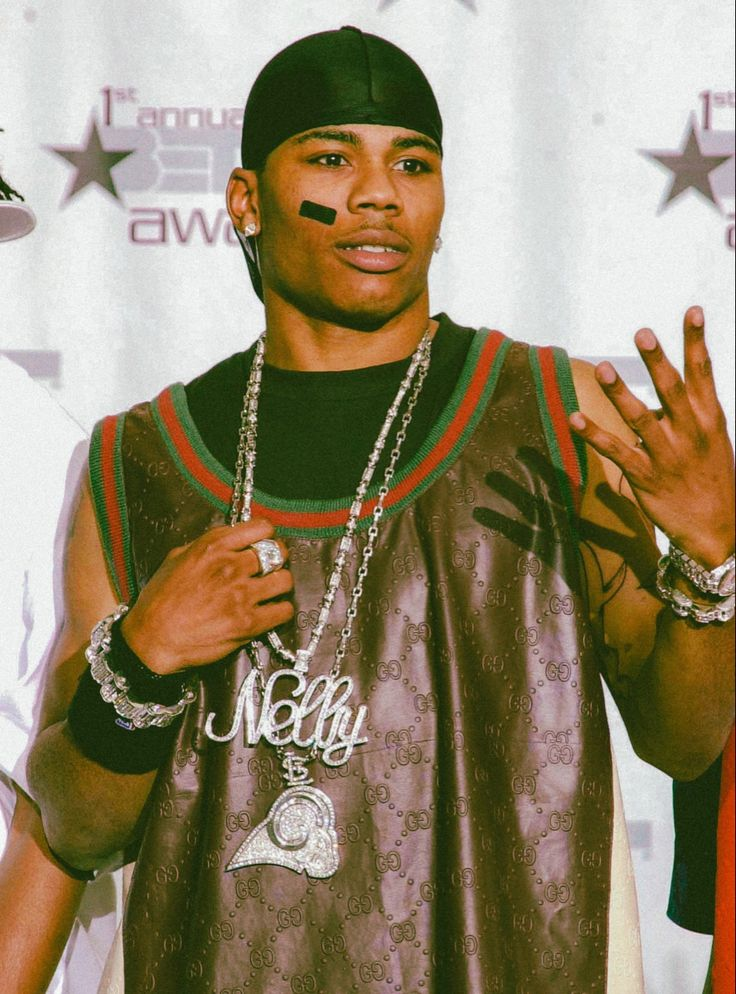
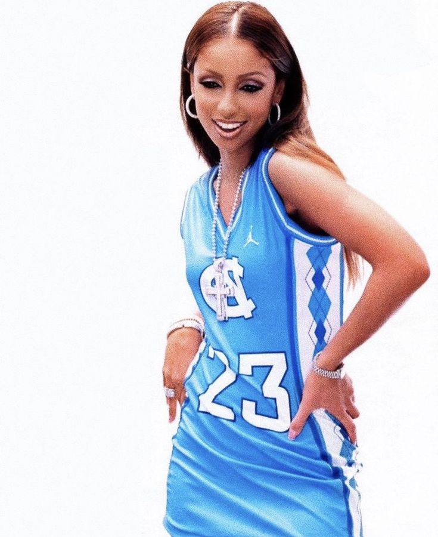
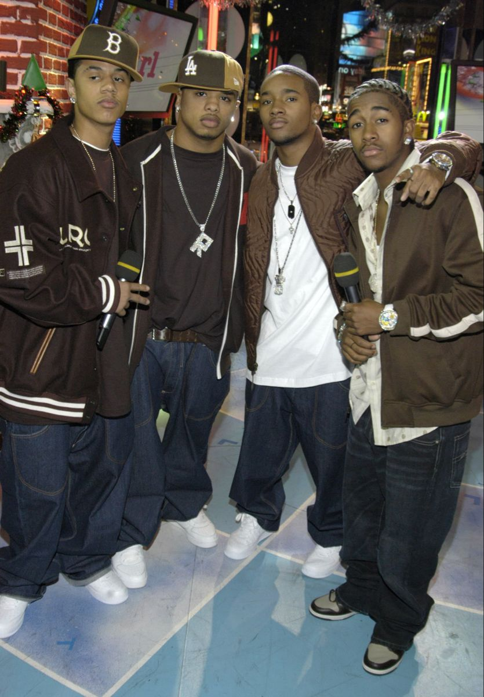

Y2K Fashion
Y2K fashion often features bold, playful, and experimental styles. This includes trends such as low-rise jeans, crop tops, mini skirts, cargo pants, platform shoes, butterfly clips, and chunky sneakers. Bright colors, metallic fabrics, and iridescent materials are also characteristic of Y2K-inspired clothing. Casual clothing and leisurewear were the other big trends of the early 2000s. Denim became a staple for men and women, going beyond jeans to shirts, jackets, and hats. If you are putting together a casual style for women, think crop tops, hoodies, low-rise flared jeans, cargo pants, daisy dukes, jean skirts, off the shoulder tops, ribbed sweaters, with platform sandals, Ugg boots, or sneakers.

Hip-Hop Styles
Music influenced many fashion styles of the 2000s, with some fashion styles including hip-hop, indie, punk, and emo-inspired. Singers and actors that rose to fame in the 90s and 2000s especially were fashion icons who influenced most of the trends during this time.
The hip-hop culture was at an all-time high in the 2000s. So, fashion styles were influenced by hip-hop music. Wear baseball caps backwards, and add large, baggy t-shirts and sweatpants to the mix. You could also wear sports jerseys and shorts. During colder days, wear a large hoodie.
Nelly
Mya
B2K
Many rappers influenced fashion with their own clothing lines in the 2000s, including Jay-Z, Diddy, Nelly, and 50 Cent. Many looks included baggy jeans, tall t-shirts, sports jerseys, velour suits, bubble jackets, and puffer vests paired with headbands, sweatbands, Timberland boots, and sneakers like Adidas Superstars or Nike Air Force 1s.
Streetwear is often brand focused casual clothing, like jeans, tees, and sneakers. In the late 2000s, popular streetwear styles included distressed skinny jeans, loose fitting tops, loose or fitted tracksuits, track pants, hoodies, graphic t-shirts, vintage thrift shop tees, and Tommy Hilfiger and U.S. Polo Assn. brands. Sneakers were an important part of the look, especially retro Nike Air Jordan’s and Adidas Yeezys. Shoulder bags were also a popular accessory for men.